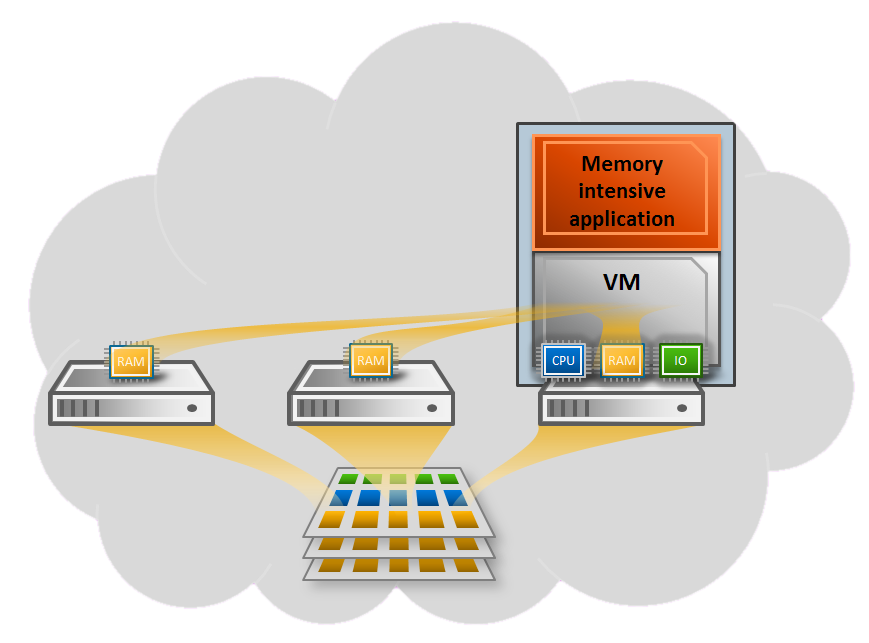

Introduction
Hecatonchire ("Hundred-Handed One" in Greek Mythology) is a framework of tools providing memory, I/O and CPU resource aggregation capabilities to x86/Linux native application as well as to Linux/KVM VMs using commodity hardware and fast RDMA-based interconnects.
Hecatonchire already provides some capabilities such as: post-copy live migration and VM-based memory pooling. While other capabilities such as application-transparent memory pooling, VM flash cloning and I/O pooling are in the development pipeline.
Hecatonchire is Open Source Free Software, and is freely available under the GNU General Public License, version 2.
News
11/04/2013
Aidan Shribman presented Hecatonchire at
Google Israel networking day 2013.
10/04/2013
Benoit Hudzia presented Hecatonchire at SAP's
Virtualization and Cloud Week.
02/04/2013
Paper titled 'Leveraging Memory Mirroring for Transparent Memory Scale-Out with Zero-Downtime Failover for Remote Hosts' was accepted to
ISCC 13
| 11/04/2013 | Aidan Shribman presented Hecatonchire at Google Israel networking day 2013. |
| 10/04/2013 | Benoit Hudzia presented Hecatonchire at SAP's Virtualization and Cloud Week. |
| 02/04/2013 | Paper titled 'Leveraging Memory Mirroring for Transparent Memory Scale-Out with Zero-Downtime Failover for Remote Hosts' was accepted to ISCC 13 |
Vision & Concepts
Cloud storage is by now a common concept allowing storage to be delivered as a service and for that reason, can be considered virtually limitless. Imagine being able to aggregate memory, CPU and I/O in exactly the same way. Imagine servers being able to request additional memory or computing power from other networked nodes on demand. The Hecatonchire project is an open source project that aims to deliver these types of aggregated resources for use on every day hardware.
Leveraging on fast Interconnects
The development in recent years of high-bandwidth, low-latency network interconnects, such as Infiniband and 100GB Ethernet has enabled the opportunity to utilize resources of remote hosts. In particular, by leveraging on RDMA (Remote Direct Memory Access), sharing memory within a cluster has become a viable scale-out option for memory intensive applications.

Memory Mirroring
Hecatonchire enables the utilization of remote memory connected through fast interconnects for storing pages. It also provides fault tolerance by a mirroring schema while guaranteeing zero-downtime failover. Our code utilizes Remote Direct Memory Access in order to bypass the operating system's overhead, this permits high-throughput and low-latency networking, which is especially useful in massively parallel computer clusters.For more details of our implementation and performance measures - check out the publications page.

Hybrid Pre-copy/Post-copy Live VM migration
Hecatonchire enables instantaneous migration of KVM/QEMU VM by using pre-copy and post-copy migration techniques.